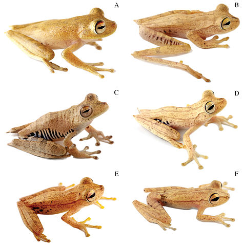
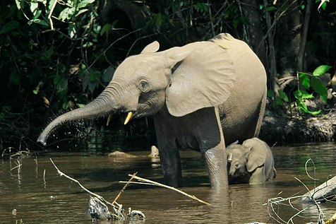
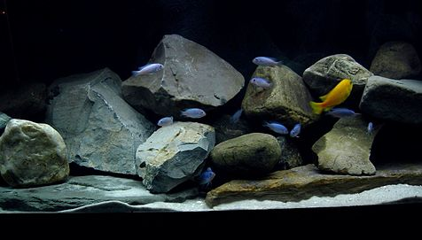
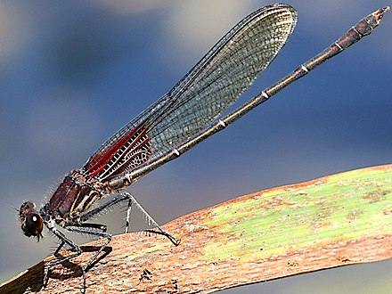
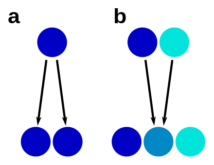
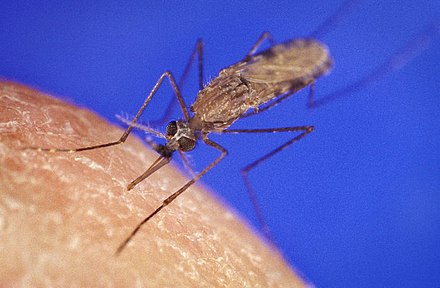

Several terms redirect here. For species-group names, see International Code of Zoological Nomenclature. For individuals of different species grouping together, see Mutualism (biology)#Service-service relationships. For the principles of hiding, see Crypsis. For supposed creatures, see List of cryptids. For another use of physiologic race, see Race (biology)#Physiological race.
In biology, a species complex is a group of closely related organisms that are so similar in appearance and other features that the boundaries between them are often unclear. The taxa in the complex may be able to hybridize readily with each other, further blurring any distinctions. Terms that are sometimes used synonymously but have more precise meanings are cryptic species for two or more species hidden under one species name, sibling species for two (or more) species that are each other's closest relative, and species flock for a group of closely related species that live in the same habitat. As informal taxonomic ranks, species group,species aggregate,macrospecies, and superspecies are also in use.
Two or more taxa that were once considered conspecific (of the same species) may later be subdivided into infraspecific taxa (taxa within a species, such as bacterial strains or plant varieties), which may be a complex ranking but it is not a species complex. In most cases, a species complex is a monophyletic group of species with a common ancestor, but there are exceptions. It may represent an early stage after speciation in which the species were separated for a long time period without evolving morphological differences. Hybrid speciation can be a component in the evolution of a species complex.
Species complexes exist in all groups of organisms and are identified by the rigorous study of differences between individual species that uses minute morphological details, tests of reproductive isolation, or DNA-based methods, such as molecular phylogenetics and DNA barcoding. The existence of extremely similar species may cause local and global species diversity to be underestimated. The recognition of similar-but-distinct species is important for disease and pest control and in conservation biology although the drawing of dividing lines between species can be inherently difficult
Definition
A species complex is typically considered as a group of close, but distinct species.[5] Obviously, the concept is closely tied to the definition of a species. Modern biology understands a species as "separately evolving metapopulation lineage" but acknowledges that the criteria to delimit species may depend on the group studied.[6] Thus, many traditionally defined species, based only on morphological similarity, have been found to be several distinct species when other criteria, such as genetic differentiation or reproductive isolation, are applied.[7]
A more restricted use applies the term to a group of species among which hybridisation has occurred or is occurring, which leads to intermediate forms and blurred species boundaries.[8] The informal classification, superspecies, can be exemplified by the grizzled skipper butterfly, which is a superspecies that is further divided into three subspecies.[9]
Some authors apply the term to a species with intraspecific variability, which might be a sign of ongoing or incipient speciation. Examples are ring species[10][11] or species with subspecies, in which it is often unclear if they should be considered separate species.[12]

Related concepts
Several terms are used synonymously for a species complex, but some of them may also have slightly different or narrower meanings. In the nomenclature codes of zoology and bacteriology, no taxonomic ranks are defined at the level between subgenus and species,[13][14] but the botanical code defines four ranks below subgenus (section, subsection, series and subseries).[15] Different informal taxonomic solutions have been used to indicate a species complex.

Cryptic species
Also calledphysiologic race16] (uncommon). This describes "distinct species that are erroneously classified (and hidden) under one species name".[17] More generally, the term is often applied when species, even if they are known to be distinct, cannot be reliably distinguished by morphology.[18] The usage physiologic race is not to be confused with physiological race

Sibling Species
Also called aphanic species. This term, introduced by Ernst Mayr in 1942,[19] was initially used with the same meaning as cryptic species,[7] but later authors emphasized the common phylogenetic origin.[20] A recent article defines sibling species as "cryptic sister species", "two species that are the closest relative of each other and have not been distinguished from one another taxonomically".[17]

Species flock
Also called species swarm. This refers to "a monophyletic group of closely related species all living in the same ecosystem".[17] Conversely, the term has also been applied very broadly to a group of closely related species than can be variable and widespread.[21] Not to be confused with a Mixed-species foraging flock, a behavior in which birds of different species feed together.
Super Species
Sometimes used as an informal rank for a species complex around one "representative" species.[22][23] Popularized by Bernhard Rensch and later Ernst Mayr, with the initial requirement that species forming a superspecies must have allopatric distributions.[24] For the component species of a superspecies,allospecies was proposed.[24]
Super aggregate
Used for a species complex, especially in plant taxa where polyploidy and apomixis are common. Historical synonyms are species collectiva, introduced by Adolf Engler, conspecies, andgrex.[25] Components of a species aggregate have been called segregates or microspecies .[25] Used as abbreviation agg. after the binomial species name.[8][26]
Sensu lato
A Latin phrase meaning 'in the broad sense', it is often used after a binomial species name, often abbreviated as s.l., to indicate a species complex represented by that species.[27][28][29]
Identification
Distinguishing close species within a complex requires the study of often very small differences. Morphological differences may be minute and visible only by the use of adapted methods, such as microscopy. However, distinct species sometimes have no morphological differences.[17] In those cases, other characters, such as in the species' life history, behavior, physiology, and karyology, may be explored. For example, territorial songs are indicative of species in the treecreepers, a bird genus with few morphological differences.[30] Mating tests are common in some groups such as fungi to confirm the reproductive isolation of two species.[28]
Analysis of DNA sequences is becoming increasingly standard for species recognition and may, in many cases, be the only useful method.[17] Different methods are used to analyse such genetic data, such as molecular phylogenetics or DNA barcoding. Such methods have greatly contributed to the discovery of cryptic species,[17][31] including such emblematic species as the fly agaric,[2] the water fleas[32] or the African elephants.[3]
Species forming a complex have typically diverged very recently from each other, which sometimes allows the retracing of the process of speciation. Species with differentiated populations, such as ring species, are sometimes seen as an example of early, ongoing speciation: a species complex in formation. Nevertheless, similar but distinct species have sometimes been isolated for a long time without evolving differences, a phenomenon known as "morphological stasis".[17] For example, the Amazonian frogPristimantis ockendeni is actually at least three different species that diverged over 5 million years ago.[34]
Stabilizing selection has been invoked as a force maintaining similarity in species complexes, especially when they adapted to special environments (such as a host in the case of symbionts or extreme environments).[17] This may constrain possible directions of evolution; in such cases, strongly divergent selection is not to be expected.[17] Also, asexual reproduction, such as through apomixis in plants, may separate lineages without producing a great degree of morphological differentiation.

A species complex is usually a group that has one common ancestor (a monophyletic group), but closer examination can sometimes disprove that. For example, yellow-spotted "fire salamanders" in the genus Salamandra, formerly all classified as one species S.salamandra, are not monophyletic: the Corsican fire salamander's closest relative has been shown to be the entirely black Alpine salamander.[33] In such cases, similarity has arisen from convergent evolution.
Hybrid speciation can lead to unclear species boundaries through a process of reticulate evolution, in which species have two parent species as their most recent common ancestors. In such cases, the hybrid species may have intermediate characters, such as inHeliconius butterflies.[35] Hybrid speciation has been observed in various species complexes, such as insects, fungi and plants. In plants, hybridization often takes place through polyploidization, and hybrid plant species are called nothospecies.
Range and habitats
Sources differ on whether or not members of a species group share a range. A source from Iowa State University Department of Agronomy states that members of a species group usually have partially overlapping ranges but do not interbreed with one another.[36] A Dictionary of Zoology(Oxford University Press 1999) describes a species group as complex of related species that exist allopatrically and explains that the "grouping can often be supported by experimental crosses in which only certain pairs of species will produce hybrids."[37] The examples given below may support both uses of the term "species group."
Often, such complexes do not become evident until a new species is introduced into the system, which breaks down existing species barriers. An example is the introduction of the Spanish slug in Northern Europe, where interbreeding with the local black slug and red slug, which were traditionally considered clearly separate species that did not interbreed, shows that they may be actually just subspecies of the same species.[38]
Where closely related species co-exist in sympatry, it is often a particular challenge to understand how the similar species persist without outcompeting each other. Niche partitioning is one mechanism invoked to explain that. Indeed, studies in some species complexes suggest that species divergence have gone in par with ecological differentiation, with species now preferring different microhabitats.[citation needed] Similar methods also found that the Amazonian frog Eleutherodactylus ockendeni is actually at least three different species that diverged over 5 million years ago.[34]
A species flock may arise when a species penetrates a new geographical area and diversifies to occupy a variety of ecological niches, a process known as adaptive radiation. The first species flock to be recognized as such was the 13 species of Darwin's finches on the Galápagos Islands described by Charles Darwin.
Pratical implications
Biodiversity estimated
It has been suggested that cryptic species complexes are very common in the marine environment.[39] That suggestion came before the detailed analysis of many systems using DNA sequence data but has been proven to be correct.[40] The increased use of DNA sequence in the investigation of organismal diversity (also called phylogeography and DNA barcoding) has led to the discovery of a great many cryptic species complexes in all habitats. In the marine bryozoanCelleprella hyalina ,[41] detailed morphological analyses and mating compatibility tests between the isolates identified by DNA sequence analysis were used to confirm that these groups consisted of more than 10 ecologically distinct species, which had been diverging for many millions of years.
Evidence from the identification of cryptic species has led some[who?] to conclude that current estimates of global species richness are too low.

Disease and pathogen control
Pests, species that cause diseases and their vectors, have direct importance for humans. When they are found to be cryptic species complexes, the ecology and the virulence of each of these species need to be re-evaluated to devise appropriate control strategies.[citation needed] Examples are cryptic species in the malaria vector genus of mosquito, Anopheles, the fungi causing cryptococcosis, and sister species of Bactrocera tryoni, or the Queensland fruit fly. That pest is indistinguishable from two sister species except that B. tryoni inflicts widespread, devastating damage to Australian fruit crops, but the sister species do not.[43]
Conservation biology
When a species is found to be several phylogenetically distinct species, each typically has smaller distribution ranges and population sizes than had been reckoned. The different species can also differ in their ecology, such as by having different breeding strategies or habitat requirements, which must be taken into account for appropriate management.[citation needed] For example, giraffe populations and subspecies differ genetically to such an extent that they may be considered species. Although the giraffe, as a whole, is not considered to be threatened, if each cryptic species is considered separately, there is a much higher level of threat.[44]
![The fly agaric comprises several cryptic species, as is shown by genetic data.[2]](images/Kärpässienet.jpeg)